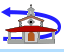
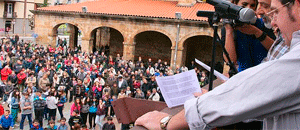
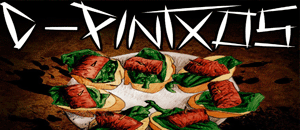

|  | |
| APIRILAK 30 ABRIL | |
17:30 |
Doinua Musika eskolako taldeen kontzertua Euskal Herria plazan. Euria balitz Azokan. |
19:00 |
Txupinazoa eta jai hasierako pregoia Euskal Herria Plazan Legazpi Musika Banda, eta Erraldoi eta Buruhandiekin. Pregoilariak: Legazpiko Erraldoi Konpartsa Elkartea LEK. Txupinazo y pregón de inicio de fiestas en la plaza Euskal Herria plaza con Legazpi Musika Banda, y la comparsa de Gigantes y Cabezudos. Pregoneros:.Legazpiko Erraldoi Konpartsa LEK  |
19:15 |
Erraldoi eta Buruhandi konpartsaren kalejira Legazpi Musika Bandarekin. |
22:00 |
Herri Afari Elegantea Euskal Herria plazan. Ohi bezala norberak eraman beharko du bere
afaria. Eguraldi txarra balitz Azokan. |
23:00 |
Rock kontzertua Euskal Herria plazan: “En tol sarmiento” eta “D´Pintxos”, LGAk sustaturik. Euria balitz Azokan.Concierto de Rock en la plaza Euskal Herria: “En tol sarmiento” y “D´Pintxos”, promovido por la LGA. En caso de lluvia en la Azoka. |
18:00KOLOKOIAREN IGOERA ETA KURROKAPOTE (ZURRAKAKURRO) DASTAKETA. ETZAITEZ BREBAJE HAU PROBAU GABE GERAU!! |
18:30HERRIKO PLAZARA JAITSI, TXUPINAZOAREN ZAI, PREGOIA ENTZUN ETA GURE KORTZU UDALETXEKO BALKOIAN AGURTU ONDOREN, KARROPOTEOA KALEAN ZEHAR. BIZIPOTEOAN EZBEZALA, EZ DA BEHARREZKOA IZANGO BAKOITZAK ETXETIK KARROA EKARTZEA |